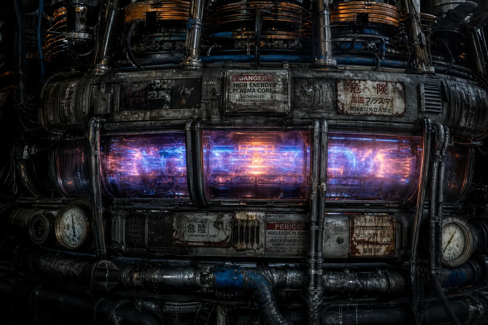
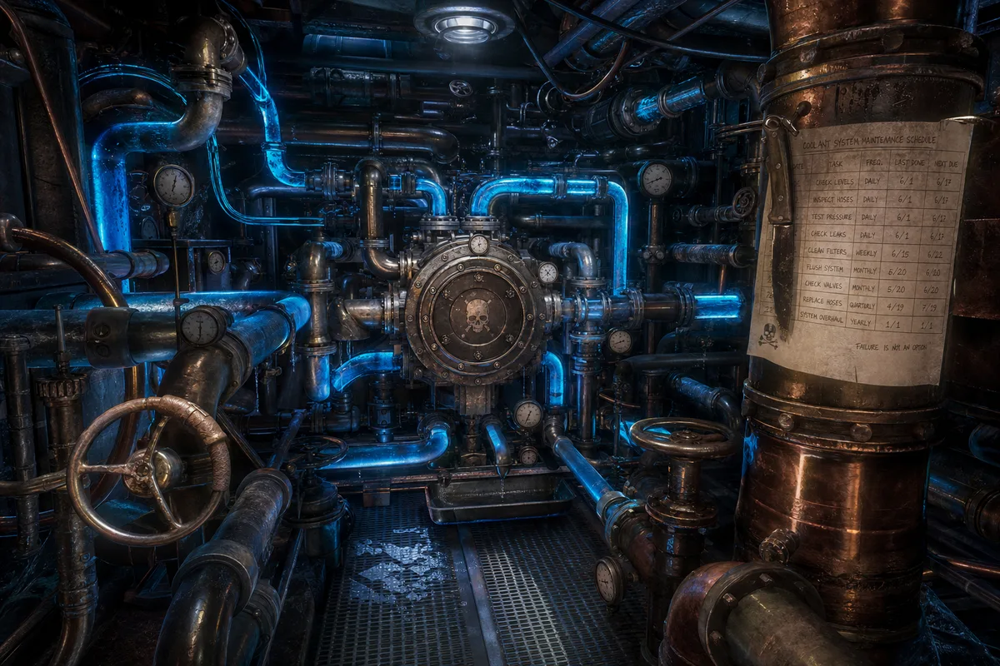
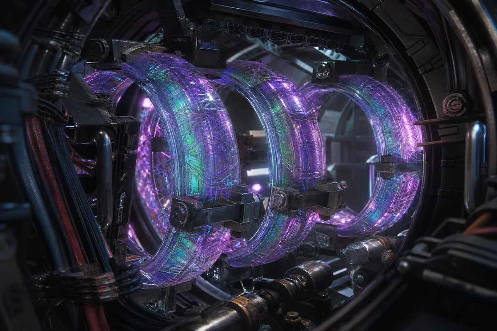
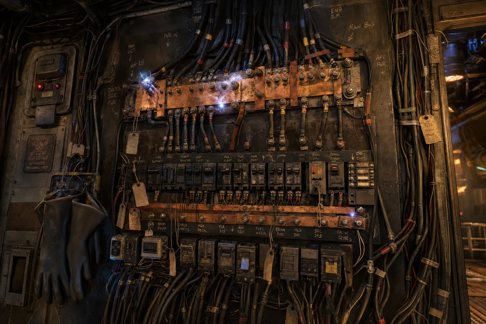
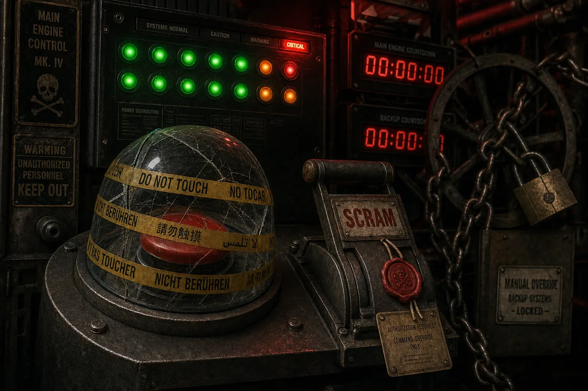
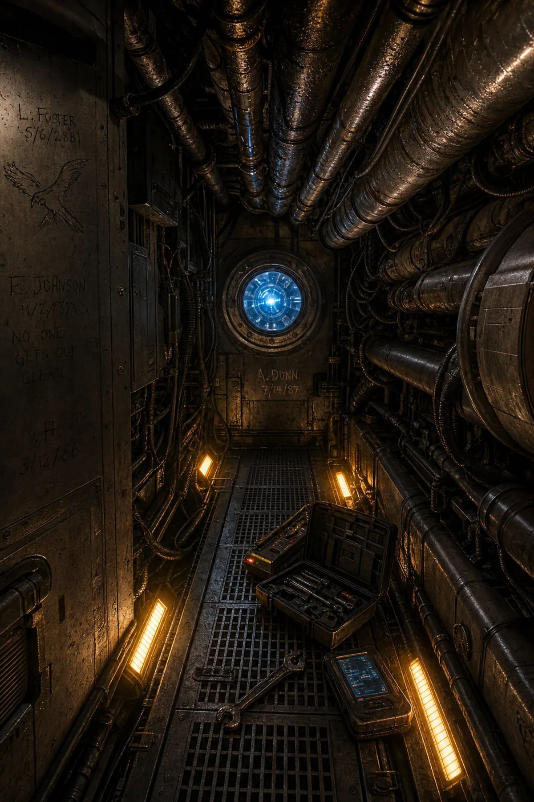

STOLEN FROM INS RETRIBUTION — BATTLE OF THE CYGNUS REACH

The heart of the Hispaniola. A Mk-VII fusion reactor was never designed for a ship this size — it was built for a destroyer three times her tonnage. Silver stole it because it was the biggest thing bolted to the floor. The containment field runs at 87%. It has run at 87% for eleven years. McTavish says it will hold. McTavish says many things.
"It hums at G-sharp. When it shifts to A-flat, we have nine seconds." — Chief Engineer McTavish
OUTPUT
4.2 TW
Peak output. Sustained output: 3.8 TW. The difference is what keeps us alive.
CONTAINMENT
87%
Rated minimum: 94%. The manual was thrown out with the captain it was stolen from.
FUEL
He-3 / D₂
Helium-3 and Deuterium. 14 months between refueling. Currently at 61%.
CORE TEMP
152M °K
152 million Kelvin at center. The viewing port glass is rated to 800°C. It is at 793°C.
💧 THE COOLANT SYSTEM
4.7 KILOMETERS OF PIPE — NONE OF IT ORIGINAL

The coolant system is the second most important thing on the ship. It keeps the first most important thing from turning the ship into a small star. 4.7 kilometers of pipe carrying liquid nitrogen and proprietary coolant fluid (recipe: classified, ingredients: stolen). The central heat exchanger processes 12,000 liters per minute. Every valve is manual. McTavish does not trust automated valves. McTavish does not trust anything he cannot hit with a wrench.
"The maintenance schedule is pinned to pipe 7-Alpha with a knife. The knife is structural. Do not remove the knife." — Engineering Log, Entry 4,411
COMPONENT
STATUS
LAST SERVICE
Primary Loop
NOMINAL
3 days ago
Secondary Loop
NOMINAL
11 days ago
Emergency Loop
UNTESTED
Never
Heat Exchanger A
NOMINAL
6 days ago
Heat Exchanger B
OFFLINE
Stolen for parts
Manual Valve Array
47 of 52 operational
Ongoing
✨ THE FTL PHASE-SHIFT COILS
ALIEN ORIGIN — SPECIES UNKNOWN — DO NOT LICK

Three crystalline rings of unknown origin suspended in a vacuum chamber by magnetic fields. The coils were found in a derelict vessel drifting in the Horsehead Nebula. No crew aboard. No logs. No explanation. Silver took them. McTavish connected them to the power grid with copper wire and profanity. They work. Nobody knows why. The crystal surface is covered in geometric patterns that appear to move when observed indirectly. Staring at them for longer than forty seconds causes temporary synesthesia. Jenkins went in for three minutes and came out speaking Latin. He does not know Latin.
"The coils are not technology. The coils are a question. The question is: do you want to arrive, or do you want to understand? You cannot have both." — McTavish, drunk, 0300 hours
⚠️ FTL SAFETY ADVISORY
Do not touch the coils. Do not look at the coils for more than 40 seconds. Do not speak to the coils. If the coils speak to you, do not answer. Report to medical. Do not report what the coils said.
RANGE PER JUMP
800 ly
Maximum. Recommended: 400 ly. Silver's personal record: 1,247 ly. He will not discuss the landing.
CHARGE TIME
4.5 hrs
Full charge from reactor. The coils hum at a frequency that makes teeth itch.
JUMPS TO DATE
1,847
All crew survived. Some crew changed. We do not discuss how.
⚡ POWER DISTRIBUTION GRID
14 BUS BARS — 3 ORIGINAL — 11 SALVAGED

The power distribution grid connects the reactor to every system on the ship. 14 main bus bars, of which 3 are original to the Hispaniola and 11 were salvaged from 9 different ships over 14 years. No two circuit breakers are the same model. All wiring is hand-labeled in chalk — McTavish's handwriting, which only McTavish can read. The rubber gloves hanging by the main panel are rated to 50,000 volts. The panel occasionally produces 60,000 volts. The gloves remain a comfort.
"Labeled? Yes, it is labeled. I labeled it. What do you mean you can't read it? It says MAIN BUS ALPHA-7. Clear as day. The smoke is unrelated." — McTavish
BUS
SOURCE
LOAD
STATUS
Alpha-1 through 3
Original
Bridge, Nav, Comms
STABLE
Alpha-4
INS Retribution
Weapons Primary
STABLE
Alpha-5,6
Merchant vessel (name filed off)
Life Support
STABLE
Alpha-7
Unknown (found floating)
FTL Drive
INTERMITTENT
Alpha-8 through 11
Various
Crew quarters, Galley, Training
STABLE
Alpha-12
Gambling debt
Cargo bay lighting
SPARKING
Alpha-13
Cemetery ship
Backup systems
SUPERSTITIOUS
Alpha-14
McTavish built it
Emergency
STABLE
🔴 EMERGENCY SHUTDOWN — SCRAM SYSTEM
NEVER USED — WAX SEAL UNBROKEN — LAST INSPECTED: "DEFINE INSPECTED"

The SCRAM system is the last resort. One button. One lever. The button kills the reactor. The lever vents the plasma into space. Neither has ever been used. The glass cover over the button is cracked but held together with tape labeled DO NOT TOUCH in six languages. The SCRAM lever has a wax seal that has never been broken. McTavish inspects it once a year by looking at it from across the room and nodding. Silver considers the existence of a shutdown system "an insult to the engine." The countdown timer displays show zeros. They have always shown zeros. Nobody has checked whether this is because the timer works or because it doesn't.
"If I ever pull that lever, it means I am already dead and my ghost has opinions." — McTavish
🔴 SCRAM PROTOCOL
Step 1: Break glass. Step 2: Press button. Step 3: Pull lever. Step 4: There is no step 4. If you need a step 4, the button didn't work and this document is now historical.
🔧 THE MAINTENANCE TUNNELS
BETWEEN THE HULLS — WHERE ENGINEERS BECOME PHILOSOPHERS

The space between the inner and outer hull is 1.2 meters wide at its widest and 0.6 meters at its narrowest. Every pipe, cable, and conduit that connects anything to anything else runs through here. Generations of engineers have scratched their names into the metal walls — dates going back to the ship's original commissioning. One small drawing of a parrot near junction 7-G has been there longer than anyone aboard. The emergency lighting strips cast dim amber light. The condensation drips constantly. It sounds like rain. Engineers who spend too long in the tunnels start talking to the pipes. The pipes, reportedly, talk back.
"The tunnels know every secret on this ship. Every wire that was spliced at 0300. Every bypass that shouldn't exist. Every prayer that was whispered when the lights went out. The tunnels are the ship's diary. I am just the man who reads it." — McTavish
👥 ENGINE CREW MANIFEST
7 SOULS — DEPARTMENT: ENGINEERING — LOYALTY: TO THE ENGINE
NAME
RANK
SPECIALITY
NOTE
McTavish
Chief Engineer
Everything
Has not left the engine room in 3 years. By choice.
Jenkins
FTL Technician
Alien systems
Speaks Latin sometimes. Does not know Latin.
Two-Finger Pete
Reactor Operator
Containment
Started with ten fingers. The reactor took opinions.
Old Martha
Coolant Specialist
Pipes and valves
Older than the ship. Possibly older than space.
The Kid
Apprentice
Running
Runs for tools. Runs from explosions. Good at both.
Deaf Morrison
Thruster Mechanic
Exhaust systems
Wasn't deaf when he started. Thrusters are loud.
Ghost
Night Watch
Monitoring
Nobody has seen Ghost. The readings are always filed on time.